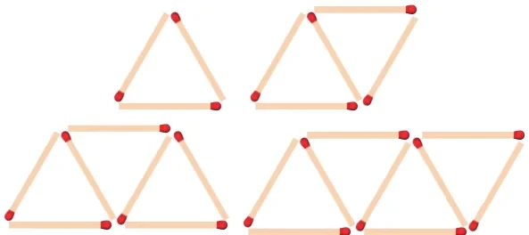

Let us begin with the following two illustrations.
Illustration 1

Make the following figures using match sticks
- How many match sticks are required for each figure? 3, 5, 7 and 9.
- Can we find the difference between the successive numbers?
\(5 - 3 = 7 - 5 = 9 - 7 = 2\)
Therefore, the difference between successive numbers is always 2.
Illustration 2
A man got a job whose initial monthly salary is fixed at ₹10,000 with an annual increment of ₹2000. His salary during 1st, 2nd and 3rd years will be ₹10000, ₹12000 and ₹14000 respectively.
If we now calculate the difference of the salaries for the successive years, we get \(12000 - 10000 = 2000;\ 14000 - 12000 = 2000\). Thus the difference between the successive numbers (salaries) is always 2000.
Did you observe the common property behind these two illustrations? In these two examples, the difference between successive terms always remains constant. Moreover, each term is obtained by adding a fixed number (2 and 2000 in illustrations 1 and 2 presented above) to the preceding term except the first term. This fixed number which is a constant for the differences between successive terms is called the “common difference”.
Definition
Let \(a\) and \(d\) be real numbers. Then the numbers of the form \(a,\ a + d,\ a + 2d,\ a + 3d,\ a + 4d, \ldots\) is said to form Arithmetic Progression denoted by A.P. The number ‘\(a\)’ is called the first term and ‘\(d\)’ is called the common difference.
Simply, an Arithmetic Progression is a sequence whose successive terms differ by a constant number. Thus, for example, the set of even positive integers 2, 4, 6, 8, 10, 12,… is an A.P. whose first term is \(a = 2\) and common difference is also \(d = 2\) since \(4 - 2 = 2,\ 6 - 4 = 2,\ 8 - 6 = 2, \ldots\)
Most of common real–life situations often produce numbers in A.P.
Note
- The difference between any two consecutive terms of an A.P. is always constant. That constant value is called the common difference.
- If there are finite numbers of terms in an A.P. then it is called Finite Arithmetic Progression. If there are infinitely many terms in an A.P. then it is called Infinite Arithmetic Progression.
2.7.1 Terms and Common Difference of an A.P.
- The terms of an A.P. can be written as
\(t_1 = a = a + (1 - 1)d, \qquad t_2 = a + d = a + (2 - 1)d,\)
\(t_3 = a + 2d = a + (3 - 1)d, \qquad t_4 = a + 3d = a + (4 - 1)d, \ldots\)
In general, the \(n^{th}\) term denoted by \(t_n\) can be written as \(t_n = a + (n - 1)d\).
In an AP, \(n^{th}\) term is, \(t_n = a + (n - 1)d\), here, \(a\) is the first term, \(d\) is the common difference.
- In general to find the common difference of an A.P. we should subtract first term from the second term, second from the third and so on.
For example, \(t_1 = a,\ t_2 = a + d\)
\(\therefore\ t_2 - t_1 = (a + d) - a = d\)
Similarly, \(t_2 = a + d,\ t_3 = a + 2d, \ldots\)
\(\therefore\ t_3 - t_2 = (a + 2d) - (a + d) = d\)
In general, \(d = t_2 - t_1 = t_3 - t_2 = t_4 - t_3 = \ldots\)
\(d = t_n - t_{n-1} \quad \text{for } n = 2, 3, 4, \ldots\)
Progress Check
- The difference between any two consecutive terms of an A.P. is \(\underline{\qquad}\).
- If \(a\) and \(d\) are the first term and common difference of an A.P. then the \(8^{th}\) term is \(\underline{\qquad}\).
- If \(t_n\) is the \(n^{th}\) term of an A.P., then \(t_{2n} - t_n\) is \(\underline{\qquad}\).
Let us try to find the common differences of the following A.P.’s
- \(1, 4, 7, 10, \ldots\)
\(d = 4 - 1 = 7 - 4 = 10 - 7 = \ldots = 3\)
- \(6, 2, -2, -6, \ldots\)
\(d = 2 - 6 = -2 - 2 = -6 - (-2) = \ldots = -4\)
Do you know?
The common difference of an A.P. can be positive, negative or zero.
Thinking Corner
If \(t_n\) is the \(n^{th}\) term of an A.P. then the value of \(t_{n+1} - t_{n-1}\) is \(\underline{\qquad}\).
Example 2.23
Check whether the following sequences are in A.P. or not?
(i) \(x + 2,\ 2x + 3,\ 3x + 4, \ldots\) (ii) \(2, 4, 8, 16, \ldots\) (iii) \(3\sqrt{2}, 5\sqrt{2}, 7\sqrt{2}, 9\sqrt{2}, \ldots\)
Solution
To check that the given sequence is in A.P., it is enough to check if the differences between the consecutive terms are equal or not.
\(\begin{aligned} t_2 - t_1 &= (2x + 3) - (x + 2) = x + 1 \\ t_3 - t_2 &= (3x + 4) - (2x + 3) = x + 1 \\ t_2 - t_1 &= t_3 - t_2 \end{aligned}\)
Thus, the differences between consecutive terms are equal.
Hence the sequence \(x + 2,\ 2x + 3,\ 3x + 4, \ldots\) is in A.P.
\(\begin{aligned} t_2 - t_1 &= 4 - 2 = 2 \\ t_3 - t_2 &= 8 - 4 = 4 \\ t_2 - t_1 &\ne t_3 - t_2 \end{aligned}\)
Thus, the differences between consecutive terms are not equal. Hence the terms of the sequence \(2, 4, 8, 16, \ldots\) are not in A.P.
\(\begin{aligned} t_2 - t_1 &= 5\sqrt{2} - 3\sqrt{2} = 2\sqrt{2} \\ t_3 - t_2 &= 7\sqrt{2} - 5\sqrt{2} = 2\sqrt{2} \\ t_4 - t_3 &= 9\sqrt{2} - 7\sqrt{2} = 2\sqrt{2} \end{aligned}\)
Thus, the differences between consecutive terms are equal. Hence the terms of the sequence \(3\sqrt{2}, 5\sqrt{2}, 7\sqrt{2}, 9\sqrt{2}, \ldots\) are in A.P.
Example 2.24
Write an A.P. whose first term is 20 and common difference is 8.
Solution
First term \(= a = 20\); common difference \(= d = 8\)
Arithmetic Progression is \(a,\ a + d,\ a + 2d,\ a + 3d, \ldots\)
In this case, we get \(20,\ 20 + 8,\ 20 + 2(8),\ 20 + 3(8), \ldots\)
So, the required A.P. is 20, 28, 36, 44, …
Note
An Arithmetic progression having a common difference of zero is called a constant arithmetic progression.
Activity 4
There are five boxes here. You have to pick one number from each box and form five Arithmetic Progressions.
| Box 1 | Box 2 | Box 3 | Box 4 | Box 5 |
|---|---|---|---|---|
| 8, 6, \(-8\), 12, 85 | 14, 1, 40, \(-5\), 2 | 26, 3.5, \(-14\), 7, 55 | 20, 11, \(-11\), \(-3\), 70 | 32, 8.5, \(-2\), 17, 100 |
Example 2.25
Find the \(15^{th}\), \(24^{th}\) and \(n^{th}\) term (general term) of an A.P. given by 3, 15, 27, 39,…
Solution
We have, first term \(= a = 3\) and common difference \(= d = 15 - 3 = 12\).
We know that \(n^{th}\) term (general term) of an A.P. with first term \(a\) and common difference \(d\) is given by \(t_n = a + (n - 1)d\)
\(t_{15} = a + (15 - 1)d = a + 14d = 3 + 14(12) = 171 \qquad (\text{Here } a = 3 \text{ and } d = 12)\)
\(t_{24} = a + (24 - 1)d = a + 23d = 3 + 23(12) = 279\)
The \(n^{th}\) (general term) term is given by \(t_n = a + (n - 1)d\)
Thus, \(\begin{aligned} t_n &= 3 + (n - 1)12 \\ t_n &= 12n - 9 \end{aligned}\)
Note
In a finite A.P. whose first term is \(a\) and last term \(l\), then the number of terms in the A.P. is given by \(l = a + (n - 1)d \Rightarrow n = \left(\dfrac{l - a}{d}\right) + 1\)
Example 2.26
Find the number of terms in the A.P. 3, 6, 9, 12,…, 111.
Solution
First term \(a = 3\); common difference \(d = 6 - 3 = 3\); last term \(l = 111\)
We know that, \(n = \left(\dfrac{l - a}{d}\right) + 1\)
\(n = \left(\dfrac{111 - 3}{3}\right) + 1 = 37\)
Thus the A.P. contain 37 terms.
Progress Check
- The common difference of a constant A.P. is \(\underline{\qquad}\).
- If a and l are first and last terms of an A.P. then the number of terms is \(\underline{\qquad}\).
Example 2.27
Determine the general term of an A.P. whose \(7^{th}\) term is \(-1\) and \(16^{th}\) term is 17.
Solution
Let the A.P. be \(t_1, t_2, t_3, t_4, \ldots\)
It is given that \(t_7 = -1\) and \(t_{16} = 17\)
\(a + (7 - 1)d = -1 \text{ and } a + (16 - 1)d = 17\)
\(a + 6d = -1 \qquad \ldots(1)\)
\(a + 15d = 17 \qquad \ldots(2)\)
Subtracting equation (1) from equation (2), we get \(9d = 18 \Rightarrow d = 2\)
Putting \(d = 2\) in equation (1), we get \(a + 12 = -1\ \therefore\ a = -13\)
Hence, general term \(\begin{aligned} t_n &= a + (n - 1)d \\ &= -13 + (n - 1) \times 2 = 2n - 15 \end{aligned}\)
Example 2.28
If \(l^{th}\), \(m^{th}\) and \(n^{th}\) terms of an A.P. are \(x, y, z\) respectively, then show that
(i) \(x(m - n) + y(n - l) + z(l - m) = 0\) (ii) \((x - y)n + (y - z)l + (z - x)m = 0\)
Solution
- Let \(a\) be the first term and \(d\) be the common difference. It is given that
\(t_l = x,\ t_m = y,\ t_n = z\)
Using the general term formula
\(a + (l - 1)d = x \qquad \ldots(1)\)
\(a + (m - 1)d = y \qquad \ldots(2)\)
\(a + (n - 1)d = z \qquad \ldots(3)\)
We have, \(x(m - n) + y(n - l) + z(l - m)\)
\(= a[(m - n) + (n - l) + (l - m)] + d[(m - n)(l - 1) + (n - l)(m - 1) + (l - m)(n - 1)]\)
\(= a[0] + d[lm - ln - m + n + mn - lm - n + l + ln - mn - l + m]\)
\(= a(0) + d(0) = 0\)
- On subtracting equation (2) from equation (1), equation (3) from equation (2) and equation (1) from equation (3), we get
\(x - y = (l - m)d\)
\(y - z = (m - n)d\)
\(z - x = (n - l)d\)
\(\begin{aligned} (x - y)n + (y - z)l + (z - x)m &= [(l - m)n + (m - n)l + (n - l)m]d \\ &= [ln - mn + lm - nl + nm - lm]d = 0 \end{aligned}\)
Note
In an Arithmetic Progression
- If every term is added or subtracted by a constant, then the resulting sequence is also an A.P.
- If every term is multiplied or divided by a non-zero number, then the resulting sequence is also an A.P.
- If the sum of three consecutive terms of an A.P. is given, then they can be taken as \(a - d,\ a\) and \(a + d\). Here the common difference is \(d\).
- If the sum of four consecutive terms of an A.P. is given then, they can be taken as \(a - 3d,\ a - d,\ a + d\) and \(a + 3d\). Here common difference is \(2d\).
Example 2.29
In an A.P., sum of four consecutive terms is 28 and the sum of their squares is 276. Find the four numbers.
Solution
Let us take the four terms in the form \((a - 3d), (a - d), (a + d)\) and \((a + 3d)\).
Since, sum of the four terms is 28,
\(a - 3d + a - d + a + d + a + 3d = 28\)
\(4a = 28 \Rightarrow a = 7\)
Similarly, since sum of their squares is 276,
\((a - 3d)^2 + (a - d)^2 + (a + d)^2 + (a + 3d)^2 = 276.\)
\(a^2 - 6ad + 9d^2 + a^2 - 2ad + d^2 + a^2 + 2ad + d^2 + a^2 + 6ad + 9d^2 = 276\)
\(4a^2 + 20d^2 = 276 \Rightarrow 4(7)^2 + 20d^2 = 276.\)
\(d^2 = 4 \Rightarrow d = \pm\sqrt{4} \text{ then, } d = \pm 2\)
If \(d = 2\) then the four numbers are \(7 - 3(2),\ 7 - 2,\ 7 + 2,\ 7 + 3(2)\)
That is the four numbers are 1, 5, 9 and 13.
If \(a = 7,\ d = -2\) then the four numbers are 13, 9, 5 and 1
Therefore, the four consecutive terms of the A.P. are 1, 5, 9 and 13.
Condition for three numbers to be in A.P.
If \(a, b, c\) are in A.P. then \(a = a,\ b = a + d,\ c = a + 2d\)
so \(\quad a + c = 2a + 2d = 2(a + d) = 2b\)
Thus, \(2b = a + c\)
Similarly, if \(2b = a + c\), then \(b - a = c - b\) so \(a, b, c\) are in A.P.
Thus three non-zero numbers \(a, b, c\) are in A.P. if and only if \(2b = a + c\)
Example 2.30
A mother divides ₹207 into three parts such that the amount are in A.P. and gives it to her three children. The product of the two least amounts that the children had ₹4623. Find the amount received by each child.
Solution
Let the amount received by the three children be in the form of A.P. is given by \(a - d,\ a,\ a + d\). Since, sum of the amount is ₹207, we have
\((a - d) + a + (a + d) = 207\)
\(3a = 207 \Rightarrow a = 69\)
It is given that product of the two least amounts is 4623.
\((a - d)a = 4623\)
\((69 - d)69 = 4623\)
\(d = 2\)
Therefore, amount given by the mother to her three children are ₹(69−2), ₹69, ₹(69+2). That is, ₹67, ₹69 and ₹71.
Progress Check
- If every term of an A.P. is multiplied by 3, then the common difference of the new A.P. is \(\underline{\qquad}\).
- Three numbers \(a\), \(b\) and \(c\) will be in A.P. if and only if \(\underline{\qquad}\).